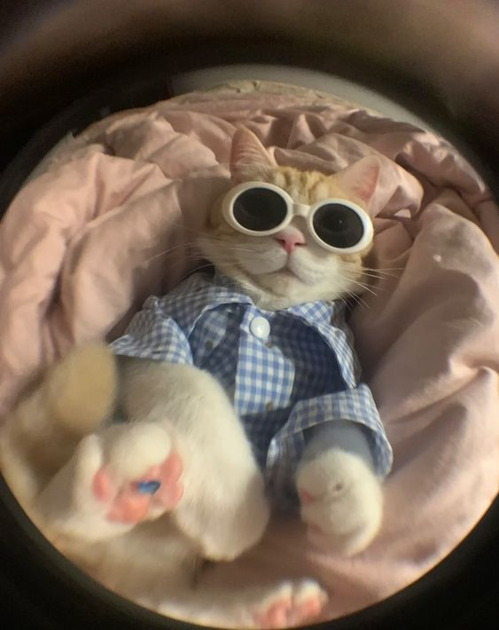
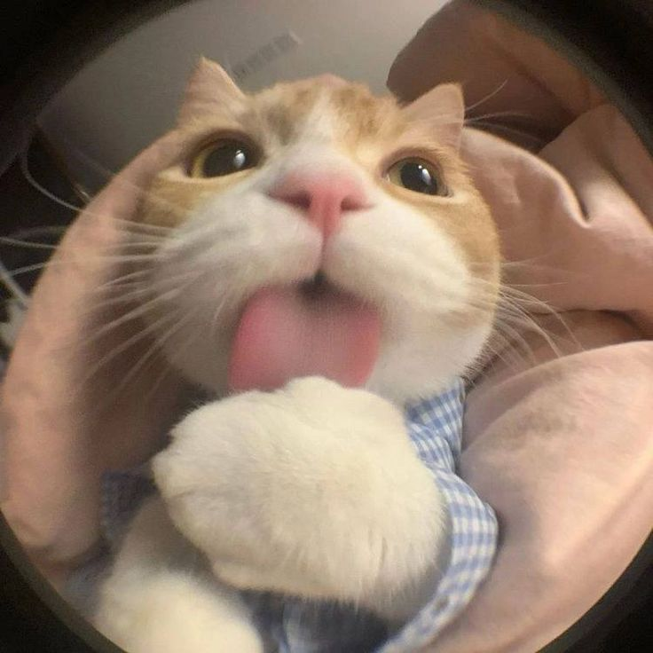
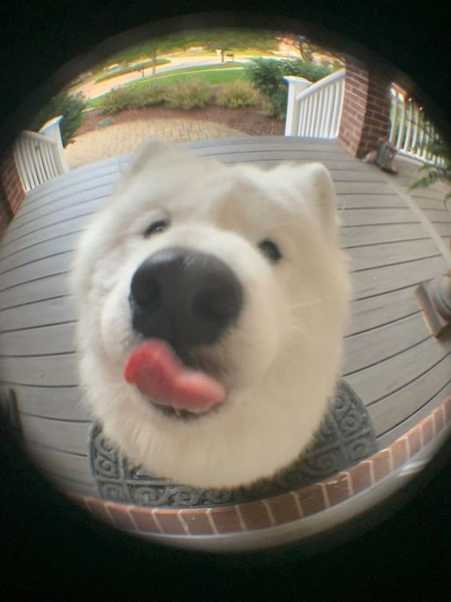
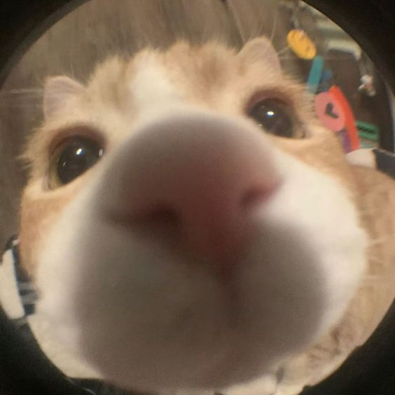

Cibellynho
Você sabia que Cibellynho pinta o cabelo com beterraba!?
E ainda no final do dia passa a tinta vermelha no cabelo para disfarçar o fedo.

Duardinha
Duardinha foi flagrada brigando com um anão no ônibus
por um lugar,
pois ela achou que era uma criança.

Poli Pocket
Poli Pocket é encontrada no chão da Afesu Moinho,
pois comeu 30 cachorros-quentes em um dia.

Tainazona
Tainazona é vista fazendo boca de urna na porta de escola,
e ainda pede dinheiro
para novo prefeito de Cotia.